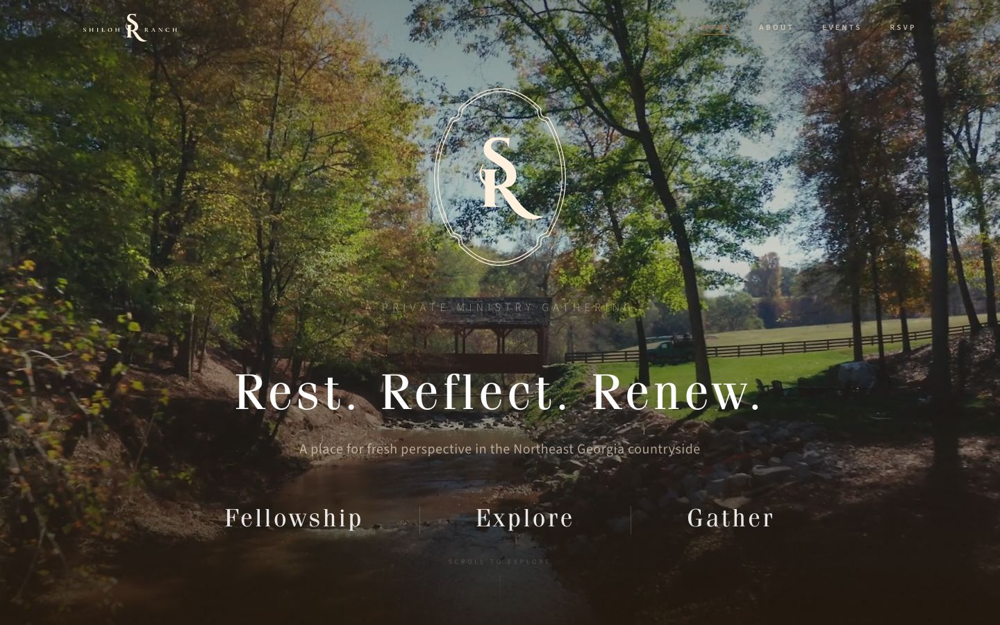
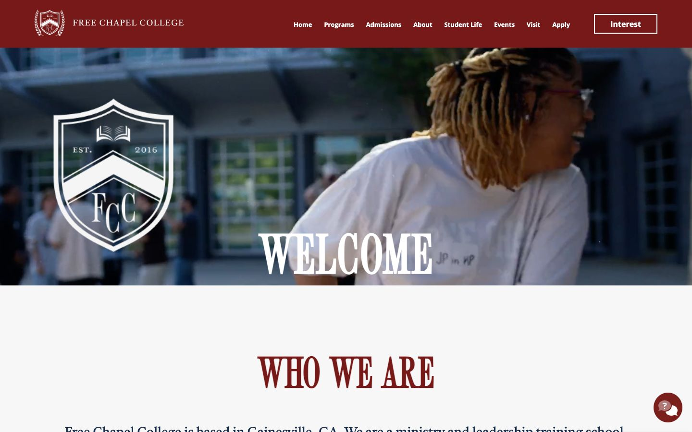
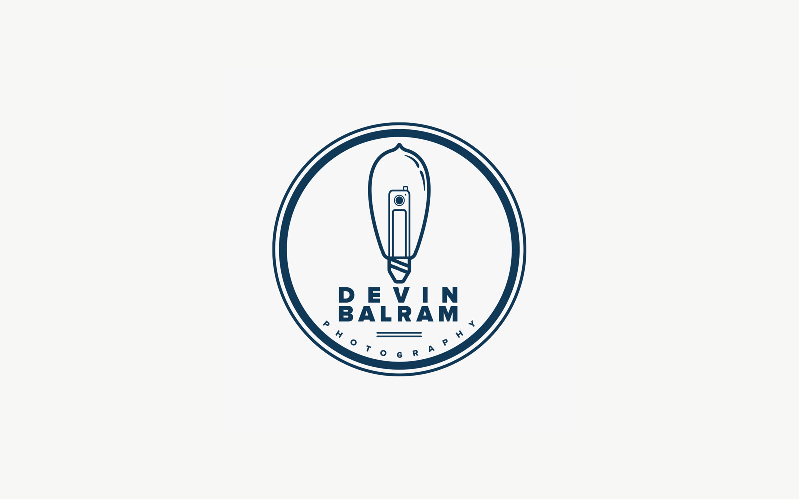

My Name Is Brandon. I'm a graphic and web designer who dabbles in just about everything.
I design and build websites for churches, ministries and conferences.
See services →My work
Forward Conference
The 2027 site for Atlanta's annual youth conference, hosting over 13,000 students — designed and built fresh every year since 2015.
visit site ↗
Shiloh Ranch
An invitation-only retreat portal for a private ministry ranch — custom RSVP system, admin dashboard, and event management.
visit site ↗
Free Chapel College
A recruiting and information site for Free Chapel's ministry college.
visit site ↗Free Chapel
Free Chapel's entire web presence — the public site and the custom platform behind it — designed, built, and continuously evolved since 2017.
visit site ↗The Ark Church
A complete website for The Ark Church in Salina, KS — CMS-driven content, live streaming, and social integration.
visit site ↗The Power of Short Prayers
The official site for The Power of Short Prayers by New York Times Best Selling Author Jentezen Franklin.
visit site ↗DIVINE Conference
The 2027 site for Free Chapel's annual women's conference — the latest in a yearly run since 2015.
visit site ↗
Devin Balram Photography
A hand-crafted identity for photographer Devin Balram — a vintage camera nested inside an Edison bulb.
Need something like this?
See what I can build for you →